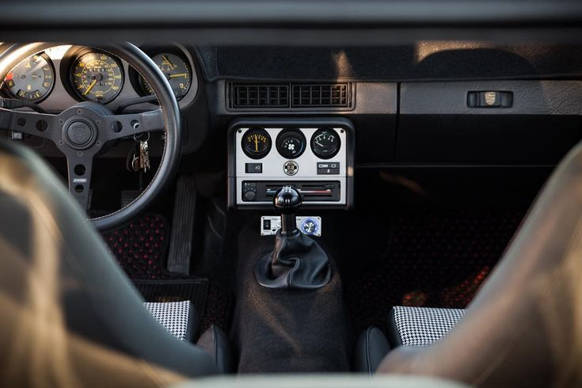
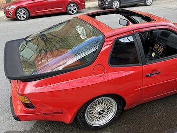
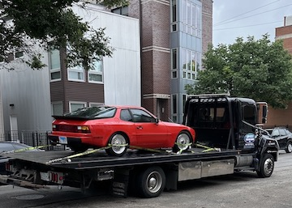

The Porsche 944 Was My First Car
And it was the dumbest but coolest thing I ever bought.
A Little Bit About The Car
The 1983 Porsche 944 took a completely different approach to engineering than the regular 911 models of the time. Instead of having the engine in the back like the 911, it was placed in the front. This was an unusual move for Porsche. Another unique feature of the 944 was that it was a transaxle design. So instead of the transmission being mounted by the engine. It is in the rear of the car. This design was possibly the most important feature of the car. Since the weight distribution was nearly 50/50, the car could handle being pushed to the limit incredibly well. With a top speed of 130 mph and a 5-speed manual gearbox, it was to be taken seriously in the early 80s. The design is based on the earlier Porsche 924 but was updated and improved with wider fenders and more power to fit the Porsche branding better.
The car was designed to fit into an entry-level market segment. At the time of its release, prices started at around $18,000 dollars which is equivalent to around $56,000 today. Certainly not cheap, but for an entry-level sports car it was a steal. For the earlier models, its interior was very 80's and simple. One of my favorite features is the tachometer being mounted upside down. The car can seat four people however, the rear seats are hardly capable of comfortably holding a child. As such, it's better to simply fold the rear seats down and enjoy more trunk space. The 944 had an incredibly sharp and aggressive design for its time. The rear fender flares were incredibly noticeable and gave the car a daunting stance. The rear hatch was all glass which looked very sleek and improved visibility. Driving the car is relatively simple and easy as there is hardly any blind spot and the car maintains a nimble behavior. Once you put in the time to understand how the car felt and gave feedback to the driver, you could really push it to the limits. Curves are where the car really stood out. Sweeping turns are no match for the 944 as it stays planted the whole way through because of its transaxle design.
Why The Porsche 944 Makes A Great First Car
- It's manual gearbox is a blast to use
- If you're up for the challenge, you can get an incredibly cheap example and restore it to your liking
- You will stand out as its design is like nothing on the road today
- You can easily find genuine Porsche parts but also source parts from other cars made by Volkswagen in the era
- Being that the engine is not crammed in the rear, it is relatively easy to work on
- These cars were made to last, with some having an excess of over 300k miles
- They are relatively affordable now thanks to depreciation
- It may prove to be a worthy investment as vintage Porsche prices have steadily climbed over the years
- Pop-up headlights
My Ownership Experience
When I first saw the car, I was immediately filled with excitement as the design truly is something special. This was not exactly a good thing because I was probably sold on the car before I even bought it and that influenced my decision-making. I was also shocked at its size. A regular sedan from today's era looks huge next to the 944 and it's very scary when driving considering the car has no airbags or any safety features like traction control, stability control, or things of that nature. It really is just you and the car when you are driving and as a result, it demands more attention and engagement. The manual gearbox is absolutely the most fun aspect of the car. At first, I was intimidated as I knew my shifting skills were not exactly refined but after about 30 minutes or so it became second nature. As for reliability, the car is 40 years old so there are going to be hiccups every now and then. For me, the second time I took the car out for a drive it decided to shut down in the middle of rush hour in downtown Chicago. That experience set the tone for what was to come with the car. It has a while to go before it can be reliably used every day. But if you take care of it, it will take care of you. There are times when things get frustrating, and I just want a car that works properly when I need it to. But then I think about the day I drove on Lake Shore Drive at night. The feeling of shifting through the gears and maneuvering the car around is really an experience. For a 40-year-old car, it remains light and nimble which leads to incredible driving character and it's something I can't say I have experienced in other cars.
My car isn't perfect nor was it a great financial decision, but it is something I hope to take care of for the rest of my life. It is a long-term commitment that still makes me happy when I look at it today. The stories I have in the past year -both good and bad- of ownership are just the beginning.
